[unity3D]Cinemachineを使い、TPSカメラの作成を楽にする方法
unityのカメラ実装って地味に面倒ですよね
今回はCinemachineというものを使い、超楽にTPS視点のカメラを作る方法を紹介します
ちなみに、CinemachineでTPS視点を実装する記事って少ないんですよね
仮にあっても、やり方が作ってるものと相性が悪かったりして、私がゲームを作る際苦労しました
ですので私と同じように苦しむ人を減らすため、この記事を書いていこうと思います
ちなみに使用しているUnityのバージョンは「2022.3.24f1」です
Cinemachineとは
簡単に言うと、カメラの作成を楽にするための公式アセットです
FPS・TPS・MOVAの視点など、ジャンル毎によく使うカメラワークがあります
そういったカメラワークを自分で毎回1から作ると大変です
Cinemachineでは、そういったよく使うカメラの処理を予め用意してくれているので、ゲーム開発者は少し設定を弄るだけで簡単にいい感じのカメラを作ることが出来るのです
ChinemaBrainという核に、設定を肉付けしていくようなイメージで扱います
前準備
下記の画像のように、操作したいキャラをシーンに配置しましょう
私は「ただのブロック」というキャラもどきをシーンに配置しました
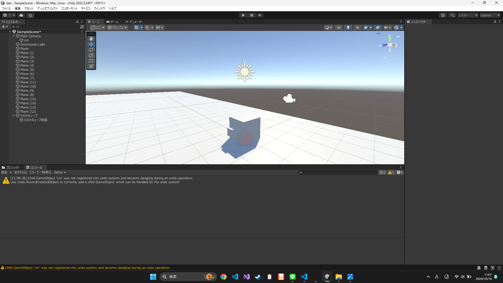
前準備はこれだけです
次はTPSカメラを作成していきます
STEP1. Cinemachineをインストール
まずはcinemachineをインストールしましょう
手順は以下の通りです
パッケージマネージャーを開くために、ウィンドウ > パッケージマネージャーを選択
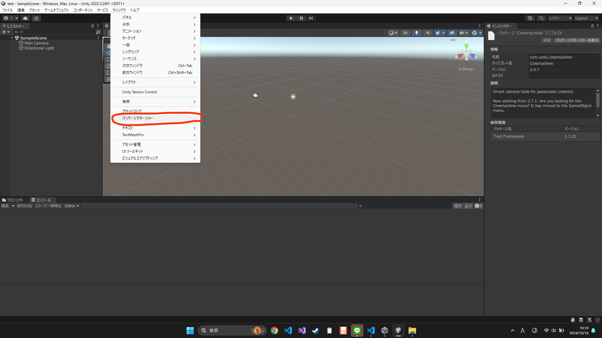
「パッケージ: プロジェクト内」をクリックし、ドロップダウンを開く
「Unityレジストリ」を選択
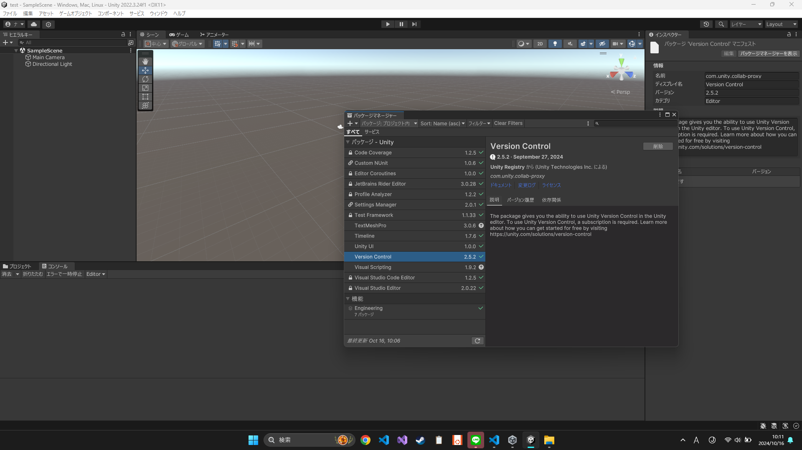
検索窓で「Cinemachin」を検索
表示されたCinemachinを選択し、インポート
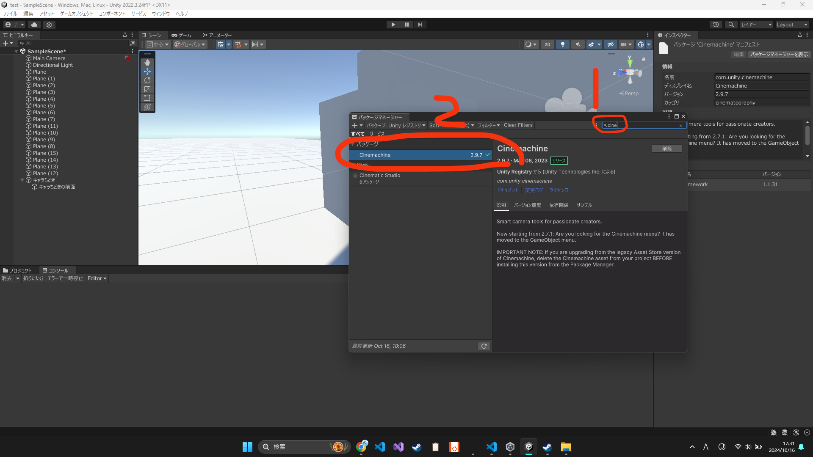
私はインポートしてあるので削除ボタンがありますが、皆さんは「インポート」になってると思います
パーケージマネージャを閉じる
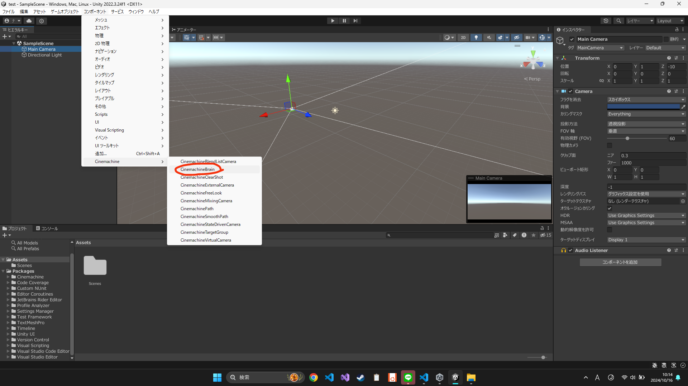
STEP2. メインカメラにChinemachineを追加
ChinemachineBrainをメインカメラに追加
ChinemachineBrainとは名前の通りChinemachineの脳であり、核みたいなものです
なのでChinemachineBrainは、とりあえずメインカメラにくっつけておくものだと覚えましょう
手順は以下の通りです
メインカメラを選択し、コンポーネント > Chinemachine > ChinemachineBrain

ChinemachineVirtualCameraをメインカメラに追加
ChinemachineVirtualCameraとは、カメラ操作に関する設定を行うものです
先ほどChinemaBrainを追加した要領で、ChinemachineVirtualCameraも追加しましょう
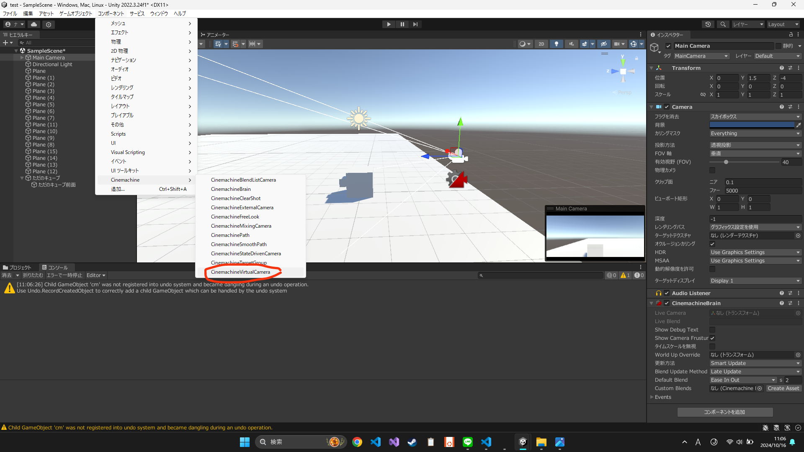
ChinemachineCameraOffsetを追加
ChinemachineCameraOffsetとは、名前の通りカメラとの距離感を調整するものです
では追加していきましょう
手順は以下の通りです。
ChinemachineVirtualCameraのAdd Extentionプロパティから、ChinemachineCameraOffsetを選択
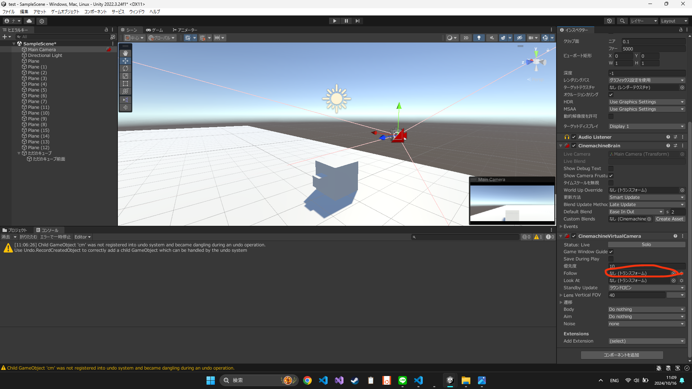
STEP3. 設定を弄ってTPS視点完成!!
Followの設定
Followとは追跡する対象を選択する項目です
Chinemachineではこの項目があるので、キャラの子要素にカメラを設定する必要がありません
便利ですね～
ということで、Followを設定していきます
手順は以下の通りです
Follow > Followのドロップダウンから、操作したいキャラを選びます
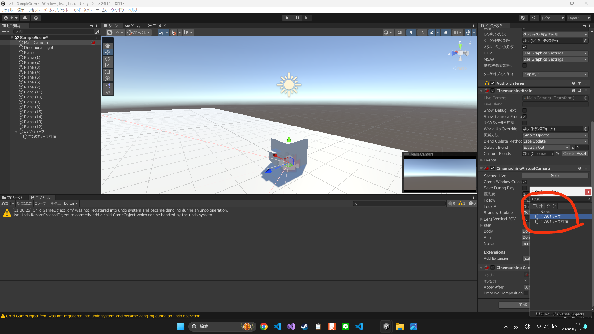

私は「ただのキューブ」を操作したいので、それ選びます
ゲームオブジェクトなら何でも選べるので、皆さんはお好みで操作したいキャラを選んで大丈夫です
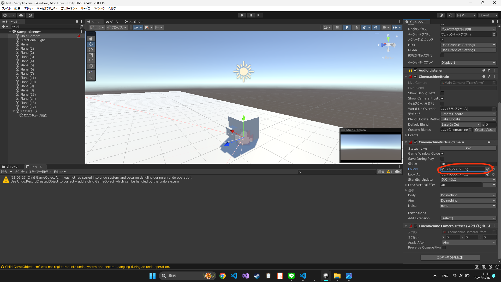
Bodyの設定
Bodyとは、カメラを動かすアルゴリズムを選択する項目です
Body項目のドロップダウンから「Hard Look To Target」を選択します

「Hard Look To Target」とは名前の通り、常にFollowで設定した対象にカメラを向けるように動くための設定です
「3rd person Follow」を選ばなくていいの？
と思った方もいるかもしれません
私も最初はそう思いました
しかしこれは孔明の罠です
私は躓きました
というのも、「3rd person Follow」はキャラの向きを変えるとカメラが移動し、向きも変わります
ですのでTPSには向きませんでした
色々試行錯誤した結果、「Hard Look To Target」使う方法に行きつきました
Aimの設定
Aimとは、カメラ向きをどのように変えるかを選択する項目です
設定方法は、Aim項目のドロップダウンから「POV」を選択するだけです
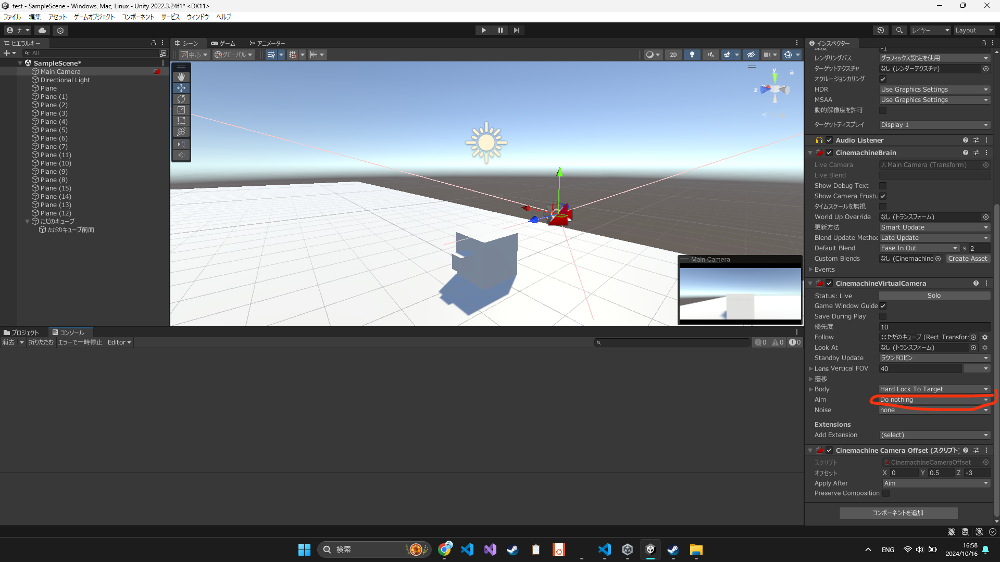

POVとはFPSみたいなカメラ操作を指します
TPSとFPSの違いは距離感と、キャラの向きが連動するかの違いだけです
ですのでカメラの向きの設定は、FPSと同じような設定で大丈夫です
キャラとカメラの距離感設定
ChinemachineCameraOffsetのオフセットという項目で、キャラとカメラの距離感を設定できます
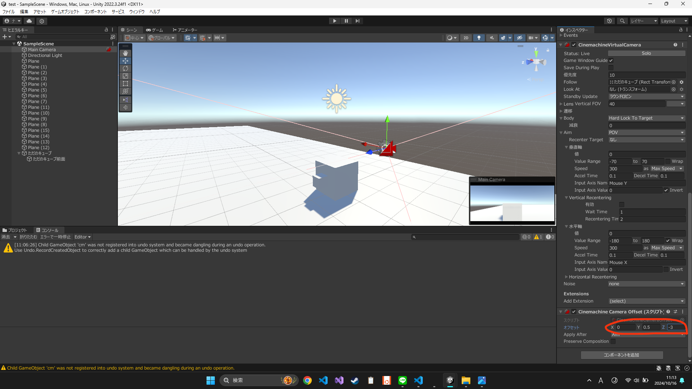
これでTPSっぽい距離感に調整したら、TPSカメラ完成の完成です!!
下記がカメラの操作感です

まとめ
いかがだったでしょうか？
この記事が皆さんのお役に立てたら嬉しいです
ではまた！